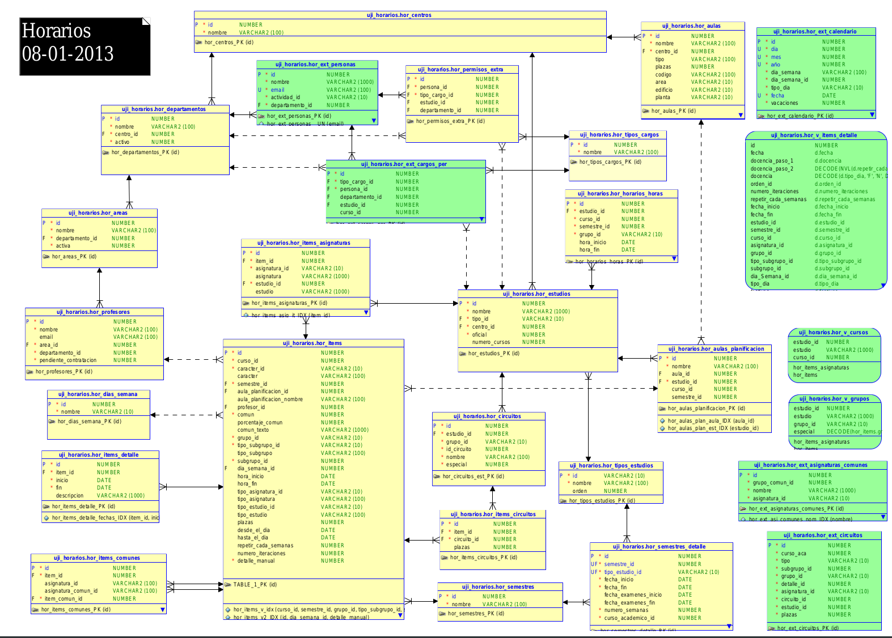

Testing
Proyectos a prueba de bombas
AKA: Horarios se ha complicado mucho.
¿Por qué necesito tests?
Si hay que cambiar líneas de código en nuestro proyecto, nos arriesgamos a un...

Test unitarios
Nos comprueban que un módulo de código hace lo que se espera, y lo hace bien.
Ejemplo: funcion multiplicaPorDos
Test: comprueba que la funcion multiplicaPorDos(3) devuelve: 6.
Test integración
Nos comprueban que todos los elementos que componen un proceso funcionan bien.
Ejemplo: Test que hace una llamada al servicio que obtiene la tabla de multiplicar del 2 completa del 1 al 1000.
En nuestro caso, los tests de integración atraviesan varias capas: Servicio, modelo, y DAO.
Estructura de los test de la capa REST
- Inicialización de datos. (Builders).
- Ejecución de las llamadas rests.
- Comprobación de que los resultados son los esperados. (Hamcrest).
¿Qué datos de DB utilizaremos en los test?
Los datos de la DB de producción.Los datos de la DB de desarrollo.- Datos simulados en una base de datos en memoria.
Base de datos en memoria H2
Cambiaremos nuestro applicationContext.xml para los tests, enlazando con una base de datos en memoria.
<property name="jpaVendorAdapter">
<bean class="org.springframework.orm.jpa.vendor.HibernateJpaVendorAdapter">
<property name="database" value="H2" />
<property name="showSql" value="true" />
<property name="databasePlatform" value="org.hibernate.dialect.H2Dialect" />
</bean>
</property>
Base de datos en memoria H2
En la definición de nuestras clases de test cambiaremos el contexto a la base de datos en Memoria.
@RunWith(SpringJUnit4ClassRunner.class)
@ContextConfiguration(locations = { "classpath:applicationContext-test.xml" })
@TransactionConfiguration(defaultRollback = false)
public class TablaDeMultiplicarTest {
}
¿Y los datos para el test?
El esquema de la base de datos se generará sólo a partir de las anotaciones JPA, pero los datos los tendremos que construir nosotros a mano. Para facilitar estre proceso utilizaremos Builders

Builders
Nos facilitar el proceso poblar nuestra base de datos en memoria con datos controlados para simular una ejecución de los tests con datos reales.
Creación de un builder
Hay que implementar una nueva clase Builder que creará nuestros objetos, ya sea en memoria o en la base de datos.
public class UsuarioBuilder
{
private Usuario usuario;
private UsuarioDAO usuarioDAO;
public UsuarioBuilder(UsuarioDAO usuarioDAO)
{
this.usuarioDAO = usuarioDAO;
usuario = new Usuario();
}
public UsuarioBuilder()
{
this(null);
}
public UsuarioBuilder withNombre(String nombre)
{
usuario.setNombre(nombre);
return this;
}
public Usuario build()
{
if (usuarioDAO != null)
{
usuario = usuarioDAO.insertUsuario(usuario);
}
return usuario;
}
}
Uso de los builders
Una vez tenemos creadas nuestras clases Builder que recubren a los modelos, ya podemos utilizarlas para poblar de datos nuestro entorno de testing.
@Autowired
private CentroDAO centroDAO;
@Autowired
private AulaDAO aulaDAO;
@Before
@Transactional
public void rellenaDatos()
{
Centro centro = new CentroBuilder(centroDAO).withNombre("Centro de prueba").build();
centroId = centro.getId();
Edificio edificio = new EdificioBuilder().withNombre("Edificio 1").withCentro(centro).build();
PlantaEdificio plantaEdificio = new PlantaEdificioBuilder().withNombre("Planta 1").withEdificio(edificio).build();
PlantaEdificio plantaEdificio2 = new PlantaEdificioBuilder().withNombre("Planta 2").withEdificio(edificio).build();
AreaEdificio areaEdificio = new AreaEdificioBuilder().withNombre("Area 1").withEdificio(edificio).build();
AreaEdificio areaEdificio2 = new AreaEdificioBuilder().withNombre("Area 2").withEdificio(edificio).build();
TipoAula tipoAula = new TipoAulaBuilder().withNombre("Tipo Aula 1").withEdificio(edificio).build();
TipoAula tipoAula2 = new TipoAulaBuilder().withNombre("Tipo Aula 2").withEdificio(edificio).build();
new AulaBuilder(aulaDAO).withNombre("Aula 1").withArea(areaEdificio).withTipo(tipoAula).withPlanta(plantaEdificio).withEdificio(edificio).build();
new AulaBuilder(aulaDAO).withNombre("Aula 2").withArea(areaEdificio2).withTipo(tipoAula).withPlanta(plantaEdificio2).withEdificio(edificio).build();
new AulaBuilder(aulaDAO).withNombre("Aula 3").withArea(areaEdificio).withTipo(tipoAula2).withPlanta(plantaEdificio).withEdificio(edificio).build();
new AulaBuilder(aulaDAO).withNombre("Aula 4").withArea(areaEdificio).withTipo(tipoAula).withPlanta(plantaEdificio).withEdificio(edificio).build();
new AulaBuilder(aulaDAO).withNombre("Aula 5").withArea(areaEdificio).withTipo(tipoAula).withPlanta(plantaEdificio2).withEdificio(edificio).build();
new AulaBuilder(aulaDAO).withNombre("Aula 6").withArea(areaEdificio2).withTipo(tipoAula2).withPlanta(plantaEdificio).withEdificio(edificio).build();
}
Test en la capa rest
Una vez tenemos cargados los datos controlados de testing en la base de datos en memoria, vamos a ejecutar nuestros tests de la capa REST.
¿Qué hacen los tests de la capa REST?
- Probar la funcionalidad del servidor desde la interfaz REST que este proporciona.
- Ejercitan todas las capas. En nuestro caso Recursos Rest, Servicios, Modelos, DAOs y DTOs.
- Ventajas -> Mucha cobertura. En 1 tests se comprueba: parseo de datos, invocación a servicio, reglas de negocio, lecturas/escrituras a bbdd.
- Inconvenientes -> Identificar error cuando falla.
¿Como implementar estos tests?
- Capa REST -> Jersey -> implementación JAX-RS (JSR 311)
- Enlace a la documentación: Jersey Test Framework.
- En general: extender com.sun.jersey.test.framework.JerseyTest.
Ejemplo básico de implementación
public class MainTest extends JerseyTest {
public MainTest()throws Exception {
super("com.sun.jersey.samples.helloworld.resources");
}
@Test
public void testHelloWorld() {
WebResource webResource = resource();
String responseMsg = webResource.path("helloworld").get(String.class);
assertEquals("Hello World", responseMsg);
}
}
En la UJI: extendemos es.uji.commons.testing.jersey.JerseySpringTest
Ejemplo real de implementación
En el proyecto Horarios hemos utilizado las llamadas de la siguiente manera:
// - GET
ClientResponse response = resource.path("grupo").queryParams(getDefaulQueryParams()).accept(MediaType.APPLICATION_JSON_TYPE).get(ClientResponse.class);
List<UIEntity> listaGrupos = response.getEntity(new GenericType<List<UIEntity>>() { };
// - POST
resource.path("calendario/eventos/generica/divide/" + evento_id).accept(MediaType.APPLICATION_JSON_TYPE).post(ClientResponse.class);
// - PUT
MultivaluedMap params = new StringKeyStringValueIgnoreCaseMultivaluedMap();
params.putSingle("aulaId", String.valueOf(aulaPlanificacionId));
params.putSingle("tipoAccion", "F");
resource.path("calendario/eventos/aula/evento/" + eventoId).accept(MediaType.APPLICATION_JSON).put(ClientResponse.class, params);
// - DELETE
resource.path("calendario/eventos/generica/" + eventoId).accept(MediaType.APPLICATION_JSON_TYPE).delete(ClientResponse.class);
Comprobación de resultados
Partiendo de unos datos controlados, hemos hecho una llamada nuestra capa REST y hemos obtenido unos resultados. ¿Son los esperados?
Hamcrest
- Librería de matchers para hacer comprobaciones.
- http://code.google.com/p/hamcrest/wiki/Tutorial.
- Aserciones más naturales que con los matchers de JUnit.
Aserciones con HamCrest
Las aserciones con HamCrest son más comprensibles, fácilmente entendibles en un vistazo rápido.
- JUNIT: isequals(listaEventos.size(), 2).
- Hamcrest: assertThat(listaEventos, hasSize(2));
Más ejemplos de aserciones con HamCrest:
- assertThat(diaDelEvento(eventoId), is(Calendar.FRIDAY));
- assertThat(horaInicioDelEvento(eventoId), is(10));
- assertThat(lista_eventos, everyItem(hasTitle()));
Matchers personalizados
- assertThat(lista_eventos, everyItem(hasTitle()));
Implementación de un Matcher personalizado
public class UIEntityHasTitle extends TypeSafeMatcher
{
@Override
public void describeTo(Description description)
{
description.appendText("having a title");
}
@Override
protected boolean matchesSafely(UIEntity entity)
{
String entity_title = entity.get("title").replace("\"", "");
return entity_title != null && entity_title.length() > 0;
}
@Factory
public static Matcher hasTitle()
{
return new UIEntityHasTitle();
}
}
Análisis de cobertura
¿Cuánto de nuestro código tiene protección anti-desastres?
Sonar
Sonar nos proporciona mucha información:
- % de líneas cubiertas.
- % de ramas cubiertas.
- % por paquete y clase.
- Coloreado de líneas cubiertas por algún test.
INCONVENIENTE: Esperar a que Jenkins lance el análisis (cada 10 minutos si hay commit).
Ecobertura
Plugin para eclipse: http://ecobertura.johoop.de/
- La misma información que Sonar directamente en Eclipse.
- ¡Coloreado en el editor Java!
- Análisis de cobertura de test suites o incluso tests individuales.
One more thing...
¿Y los tests en la capa del cliente?
- Siesta: http://www.bryntum.com/products/siesta/.
- Testing javascript para ExtJS.
- Simulación de acciones de usuario en web.
- Tests unitarios: de componentes gráficos (tablas, combos, etc) o funcionales (data stores).
- Tests de integración: acciones de usuario en la aplicación completa.
Ejemplo:
var steps = [
{ action : 'click', target: '>>splitbutton' },
{ action : 'click', target :'>>menuitem[action="asignacion-aulas]' },
{ waitFor : 'componentQuery', args : '>>combobox[alias=widget.comboCentros]'},
{ action : 'click', target :'>>combobox[alias=widget.comboCentros]' },
function (next) {
var combo_centros = Ext.ComponentQuery.query('>>combobox[alias=widget.comboCentros]')[0];
var combo_estudio = Ext.ComponentQuery.query('>>combobox[alias=widget.comboEstudios]')[0];
var combo_semestre = Ext.ComponentQuery.query('>>combobox[alias=widget.comboSemestre]')[0];
t.ok(! combo_centros.disabled, 'El combo de centros NO está deshabilitado');
t.ok(combo_estudio.disabled, 'El combo de estudios está deshabilitado');
t.ok(combo_semestre.disabled, 'El combo de semestres está deshabilitado');
t.click(combo_centros.getPicker().getNode(centro_seleccionado),next);
},
Pincha aquí para la demo.
Problemas todavía no resueltos:
- ¿Con qué datos?
- Mocking -> en proceso.
- Intercepción de llamadas AJAX para devolver datos sin pedirlos al servidor.
- Integración continua
- Preparado para integrarse utilizando nodejs. todavía no está hecho.
- Test de controladores
- No está bien resuelto (de momento) por las dependencias.
- Necesario ir a tests de aplicación -> lento.